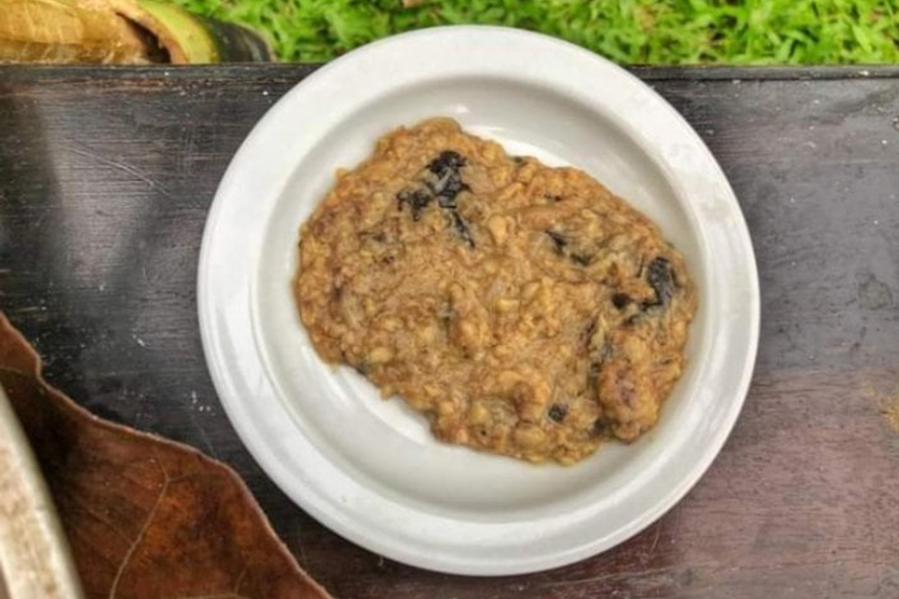

Description
Sinursuran refers to fishes cooked in bamboo internodes with salt and hot pepper. The content is crushed using a 'sursur' or a long stick. Sagket making can be applied meat or fishes which employs the practice of allowing the fish or meat's flesh to develop a rotten odor and is later cooked with salt and hot pepper.
- Atang (gabi leaves and stalk)
- Tuka’ (frog)
- Iwat (eel)
- palilang (goby)
- tangingi (bean pods)
- Sili
- Ready all the ingredients
- Put all the ingredients in a bamboo shoot
- Smashed with a stick to crush the contents until it is entirely squashed
- Cooked it for 30 minutes
- Then it is ready to serve
|